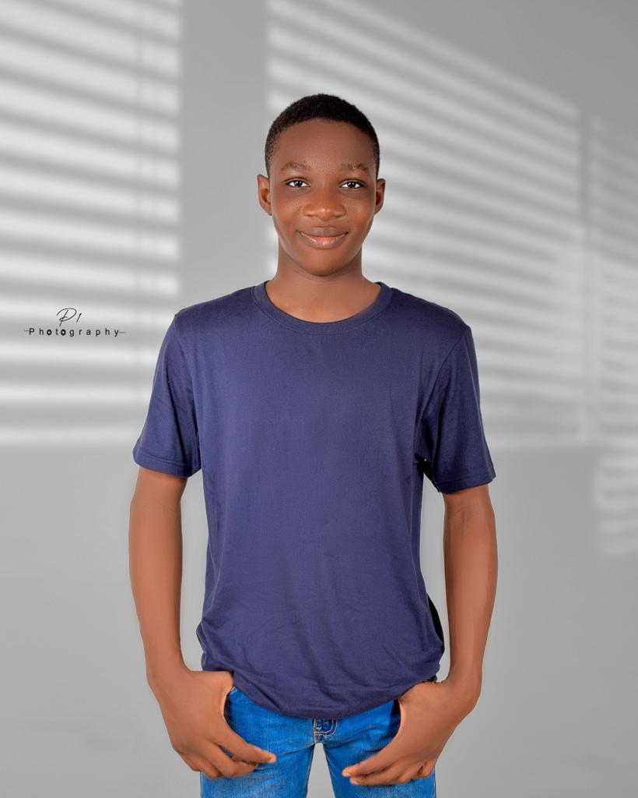

Adekunle Adewale John
About Me
Hello! I'm Adekunle Adewale John, a web development enthusiast from Nigeria. I enjoy building dynamic and accessible web applications.
My Interests
I love learning new technologies, exploring the outdoors, and working on creative web projects. My favorite part of web development is making interactive and user-friendly sites.